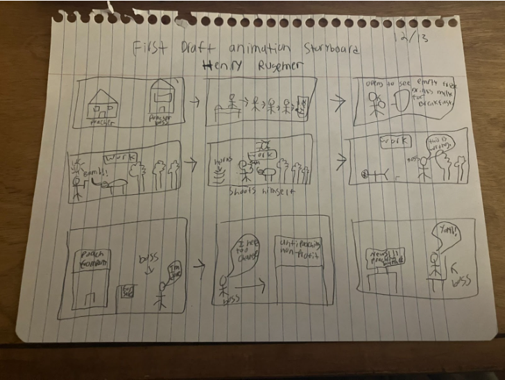
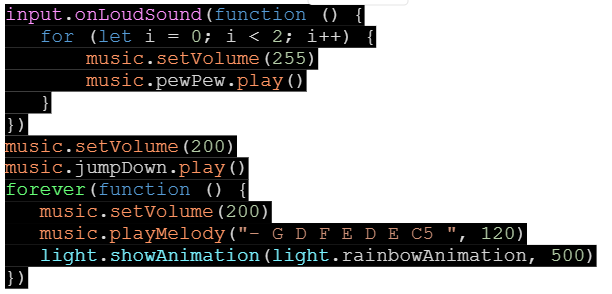

For this project I helped with every scene in the storyboard by creating the background set, furniture, and a house. I helped with the filming by changing the sets according to the storyboard and holding them steady while the pictures were taken for every frame. More specifically I created the poachers house, the sky, the grass, the bed, the fridge, and the milk carton. The story beings showing the poachers house and as it zooms in it reveals the inside. The poacher then gets up to go grab milk. The poacher realizes that he has run out of milk so he must go to wokr and earn money to buy food in order to provide for his family. The poacher goes to kill a rhino and then brings the horn to his boss. The boss then begins to self reflect on what he is doing and realizes that its wrong. He leaves behind his terrible poaching life and donates to a nonprofit organization for animal abuse. Althought this storyboard was the foundation for the animation it is important for you to know that we did change some things along the way.


We all created a sound using MakeCode that we implemented into the animation. I personally helped with character dialogue by playing the voice of the poacher in the animation. We implemented the sound while there was no dialogue.
